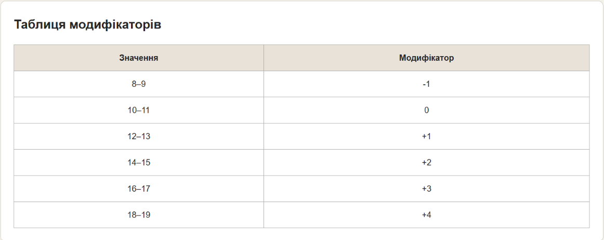

Тема, мета та місце розташування ЛР №1
Тема
Теги та атрибути HTML-документа. Структурна розмітка. Git. GitHub. Робота з репозиторіями. Опис логіки власного WEB-застосунку.
Мета
Придбати практичні навички роботи з GitHub, репозиторіями, HTML- документом, таблицями, , зображеннями, посиланнями, списками, формами Створити шаблон звітного HTML-документом для відображення результатів роботи всіх лабораторних робіт.
Репозиторій власного WEB-застосунку
Жива сторінка WEB-застосунку
Репозиторій звітного HTML-документа
Жива сторінка звітного HTML-документа
Репозиторій самостійних робіт
Жива сторінка самостійних робіт
Опис предметного середовища
Предметна область
Предметною областю розроблюваного WEB-застосунку є настільний помічник майстра рольової гри Dungeons & Dragons (D&D). Застосунок призначений для спрощення підготовки та проведення ігрових сесій, а також для швидкого доступу майстра до необхідної інформації під час гри. Основним користувачем системи є Dungeon Master (DM), або майстер гри. Під час проведення сесії майстру необхідно одночасно контролювати перебіг бою, характеристики персонажів, параметри супротивників, порядок ходів, результати кидків кубиків та інші ігрові правила. Тому основною ідеєю WEB-застосунку є об'єднання найбільш потрібних інструментів в одному інтерфейсі. Головна сторінка застосунку виконує роль інформаційної панелі майстра. На ній розміщуються короткі підказки та нагадування щодо правил D&D, які можуть бути потрібні під час гри. Наприклад, це інформація про модифікатори характеристик, основні характеристики персонажа, порядок проведення бою, правила ініціативи та інші часто використовувані ігрові відомості. Окрім сторінки з підказками, застосунок передбачає окремі розділи для роботи з листами персонажів, бестіарієм, бойовим трекером та калькулятором кидків кубиків.
Бізнес-логіка
Основна бізнес-логіка застосунку полягає у швидкому доступі майстра до необхідних ігрових інструментів та інформації. Типовий сценарій роботи користувача може виглядати наступним чином:
Функціональні вимоги
- Система повинна відображати головну сторінку з підказками та нагадуваннями щодо правил D&D.
- Система повинна забезпечувати навігацію між основними розділами застосунку.
- Система повинна дозволяти відкривати та переглядати листи персонажів.
- Система повинна забезпечувати перегляд інформації про монстрів у бестіарії.
- Система повинна дозволяти використовувати бойовий трекер.
- Система повинна дозволяти виконувати кидки ігрових кубиків за допомогою калькулятора.
- Система повинна забезпечувати зрозуміле відображення інформації.
- Система повинна дозволяти користувачу повертатися до головної сторінки та переходити між розділами без повторного завантаження всієї інформації.
- Інтерфейс повинен забезпечувати швидкий доступ до найбільш часто використовуваних функцій під час ігрової сесії.
Нефункціональні вимоги
- Основна сторінка вебзастосунку повинна повністю завантажуватися не більше ніж за 3 секунди за стабільного інтернет-з'єднання зі швидкістю не менше 10 Мбіт/с.
- Перехід між розділами застосунку без завантаження нової сторінки повинен виконуватися не більше ніж за 1 секунду після натискання користувачем відповідної кнопки.
- Відображення інформації про персонажа, монстра або результату кидка кубика повинно відбуватися не більше ніж за 2 секунди після виконання відповідної дії.
- Вебзастосунок повинен підтримувати одночасну роботу щонайменше 20 користувачів без збільшення часу відгуку основних операцій більше ніж на 30 %.
2. Надійність
- Вебзастосунок повинен забезпечувати коректну роботу основних функцій протягом безперервного сеансу використання тривалістю не менше 2 годин.
- У разі помилки окремої операції застосунок не повинен припиняти роботу всього інтерфейсу; користувач повинен мати можливість продовжити роботу не пізніше ніж через 5 секунд після виникнення помилки.
- Після перезавантаження сторінки застосунок повинен відновлювати доступ до основних розділів не більше ніж за 3 секунди.
- Доступність вебзастосунку повинна становити не менше 99 % протягом календарного місяця для розгорнутої версії.
3. Зручність використання
- Новий користувач повинен мати можливість перейти від головної сторінки до будь-якого основного розділу (Character Sheets, Bestiary, Battle Tracker, Dice Calculator) не більше ніж за 2 натискання.
- Назви основних розділів та кнопок повинні бути зрозумілими без звернення до додаткової документації.
- Основні елементи навігації повинні залишатися доступними на всіх основних сторінках застосунку.
- Виконання основної операції, наприклад відкриття аркуша персонажа або запуску калькулятора кубиків, повинно вимагати не більше 3 послідовних дій користувача.
4. Адаптивність
- Інтерфейс повинен коректно відображатися на екранах із шириною від 320 до 1920 px.
- При зміні ширини вікна браузера з 320 до 1920 px жоден основний елемент інтерфейсу не повинен виходити за межі області перегляду.
- На екранах шириною до 768 px елементи навігації повинні автоматично переходити в адаптоване розташування без горизонтального прокручування основного вмісту.
5. Сумісність
- Вебзастосунок повинен коректно працювати в актуальних версіях Google Chrome, Microsoft Edge та Mozilla Firefox.
- Основні функції повинні залишатися працездатними в браузерах, що підтримують сучасні стандарти HTML5, CSS3 та JavaScript ES6+.
- Відображення основних сторінок не повинно містити критичних помилок при використанні операційних систем Windows 10/11, macOS та Android.
6. Безпека
- Вебзастосунок повинен використовувати HTTPS для передачі даних у розгорнутій версії.
- Дані, які вводить користувач у форми, повинні перевірятися перед обробкою протягом кожного надсилання форми.
- Паролі, якщо в майбутньому буде реалізована авторизація, не повинні зберігатися у відкритому вигляді.
- Користувач без відповідних прав не повинен мати доступу до функцій або даних, призначених для іншого рівня доступу.
Структура головної сторінки WEB-застосунку
Основні структурні елементи
- Заголовок сторінки
- Навігаційне меню
- Основний інформаційний блок
- Зображення
- Таблиця
- Списки
- Форма
- Посилання
- Підвал сторінки
HTML-код таблиці
Теоретичні відомості
HTML-таблиці використовуються для представлення структурованих даних у вигляді рядків і стовпців.
Для створення таблиці використовується тег
<table>.
Рядки створюються за допомогою
<tr>, звичайні комірки —
<td>, а заголовкові —
<th>.
HTML-код таблиці
<!-- Таблиця -->
<section class="content-section">
<h2>Таблиця модифікаторів</h2>
<table>
<thead>
<tr>
<th>Значення</th>
<th>Модифікатор</th>
</tr>
</thead>
<tbody>
<tr>
<td>8–9</td>
<td>-1</td>
</tr>
<tr>
<td>10–11</td>
<td>0</td>
</tr>
<tr>
<td>12–13</td>
<td>+1</td>
</tr>
<tr>
<td>14–15</td>
<td>+2</td>
</tr>
<tr>
<td>16–17</td>
<td>+3</td>
</tr>
<tr>
<td>18–19</td>
<td>+4</td>
</tr>
</tbody>
</table>
</section>Результат виконання

Приклад таблиці
| Назва | Категорія | Значення |
|---|---|---|
| Приклад 1 | Категорія 1 | 100 |
| Приклад 2 | Категорія 2 | 200 |
HTML-код зображення
Теоретичні відомості
Для вставлення зображення використовується
тег <img>.
Атрибут src визначає шлях
до зображення, а атрибут alt
містить альтернативний текст.
HTML-код
<img
src="images/example.jpg"
alt="Опис зображення"
>Результат виконання

HTML-код форми
Приклад форми
HTML-код списків
Теоретичні відомості
Для створення маркованого списку використовується
тег <ul>, нумерованого —
<ol>.
Окремі елементи задаються тегом
<li>.
HTML-код
<ul>
<li>Перший елемент</li>
<li>Другий елемент</li>
<li>Третій елемент</li>
</ul>
<ol>
<li>Перший елемент</li>
<li>Другий елемент</li>
<li>Третій елемент</li>
</ol>Результат виконання
Маркований список
- Перший елемент
- Другий елемент
- Третій елемент
Нумерований список
- Перший елемент
- Другий елемент
- Третій елемент
HTML-код посилань
Теоретичні відомості
Для створення гіперпосилань використовується
тег <a>.
Атрибут href визначає адресу
сторінки або ресурсу.
HTML-код
<a href="https://github.com/" target="_blank">
GitHub
</a>Приклад
Висновки
У ході виконання лабораторної роботи було отримано практичні навички створення HTML-документів та використання основних HTML-тегів і атрибутів.
Було створено репозиторій GitHub, виконано клонування проєкту та налаштовано його публікацію за допомогою GitHub Pages.